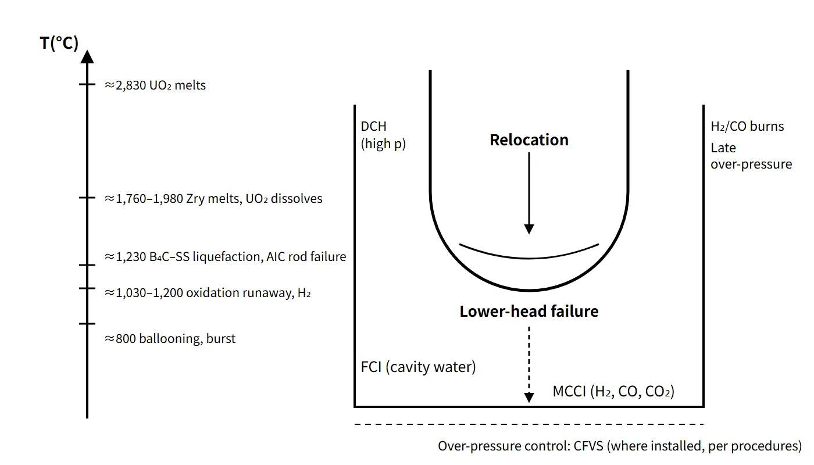

Accidents, Safety Analysis & Severe Accidents · C-SA-019
Severe Accident Progression and Phenomena — From Core Uncovery to Vessel Failure and Ex-Vessel FCI, MCCI and DCH
The in-vessel temperature thresholds from about 830 °C to 2,830 °C, and how pressure and water steer the ex-vessel loads on containment.
Severe accident progression is the chain of phenomena in which, after core cooling is lost, the core heats up under decay heat and oxidation heat and is damaged, melts and relocates (in-vessel), and the melt then breaches the reactor vessel and interacts with coolant, concrete and the atmosphere inside containment (ex-vessel).
This note concentrates on the order of the phenomena and the conditions for each.
Principle and mechanism
Four periods of in-vessel progression
The OECD/NEA (NEA/CSNI/R(2000)21) divides in-vessel progression into four periods according to the dominant phenomena.
| Period | Dominant phenomena | Boundaries |
|---|---|---|
| ① | Thermal-hydraulic and neutronic transient | Start of accident ~ start of core overheating |
| ② | Core uncovery and heat-up | Start of overheating ~ core temperature 1,500 K (about 1,230 °C) |
| ③ | Oxidation, melting, relocation, slumping | Above 1,500 K ~ core slumping |
| ④ | Lower plenum heat-up and vessel failure | Formation of a molten pool in the lower plenum ~ vessel failure |
The time to core uncovery ranges from under 10 minutes for a large LOCA to about 6–10 hours for a long-term loss of off-site power, and system pressure ranges from about 0.3 MPa to 7–15 MPa. While rod geometry is kept, the accident is in the early phase; once rod geometry is lost and a molten pool forms inside a crust, it is in the late phase.
In-vessel progression: crossing temperature thresholds one by one
- Core uncovery and heat-up: heat transfer from the uncovered part is smaller than decay heat, so the temperature rises at 0.4–1.0 K/s from decay heat alone. Heat-up is non-uniform, starting at the centre and top. At high pressure, natural circulation in the vessel and hot legs carries heat to RCS structures and slows progression, but creates a risk of creep failure of the hot legs and SG tubes.
- Cladding ballooning, burst and oxidation: at low pressure the ductile cladding balloons and bursts, releasing the gap gases and volatile fission products for the first time. Above about 1,300 K (about 1,030 °C), the heat of the Zr–steam reaction raises the heating rate well above 1 K/s (textbooks say "rapid acceleration above about 1,200 °C"), and hydrogen is produced.
- Low-temperature liquefaction (eutectic and dissolution reactions): Ag-In-Cd–Zr, stainless steel and Inconel–Zr, and B₄C–stainless steel form metallic melts at temperatures several hundred °C below the melting points of the individual materials. The melt runs down the rods (candling), freezes in the cooler lower region to form a metallic blockage, blocks the flow channels and speeds up heat-up further.
- Cladding melting, fuel dissolution and molten pool: UO₂ in contact with molten Zircaloy dissolves and liquefies at temperatures more than 300 K below its melting point. A (U,Zr)O₂ ceramic blockage forms higher up, and above it a molten pool surrounded by a crust grows.
- Relocation and lower-head failure: when the crust breaks, melt flows into the lower plenum. If water is present, the melt is quenched and fragmented, with a steam spike and further oxidation. Melt collected in the lower head stratifies into an oxide layer (below) and a lighter metal layer (above), and the thin metal layer concentrates heat flux on the side wall (the focusing effect). If cooling is insufficient, the vessel fails.
| Phenomenon | Temperature (approx.) | Basis |
|---|---|---|
| Cladding ballooning and burst (low pressure) | 700–900 °C (depends on pressure difference and heating history) | NUREG-0630 family |
| Ag-In-Cd absorber melting | 830 °C (1,100 K, inside stainless cladding) | NEA |
| Zr oxidation acceleration | 1,030 °C (1,300 K) | NEA |
| Ag-In-Cd rod failure, B₄C–stainless liquefaction | 1,230 °C (1,500 K); rod failure at high pressure 1,430 °C | NEA |
| Stainless steel melting | 1,400–1,450 °C | General material value |
| Zircaloy melting | 1,760–1,980 °C (more oxygen → higher melting point) | NEA |
| (U,Zr)O₂ solidification (crust on cooling) | Up to 2,530 °C (2,800 K, composition-dependent) | NEA |
| UO₂ melting | 2,830 °C (3,100 K) | NEA |
![Conceptual section of a damaged PWR core with ballooned rods, a crust and molten pool, a metallic blockage and debris in the lower plenum, next to a temperature axis from 0 to 3,000 °C with heating lines from 350 °C at 1.0 and 0.4 K/s reaching 1,030 °C, and a ladder of landmarks: cladding ballooning 700 to 900 °C, Ag-In-Cd absorber melting about 830 °C, Zr oxidation heat about 1,030 °C, ECCS limit 1,204 °C, B4C-stainless liquefaction and low-pressure Ag-In-Cd rod failure about 1,230 °C, high-pressure rod failure about 1,430 °C, stainless steel 1,400 to 1,450 °C, Zircaloy 1,760 to 1,980 °C, (U,Zr)O2 crust up to about 2,530 °C, ZrO2 about 2,700 °C and UO2 about 2,830 °C](../../assets/images/concepts/c-sa-019-severe-accident-progression/fig1-invessel-temperature-ladder.webp)
Modes of lower-head failure
- Penetration failure: a penetration such as an ICI nozzle heats up and fails, or its weld weakens and the tube is ejected by the pressure difference.
- Local failure: local melting or creep where the metal layer focuses heat flux.
- Global creep rupture: a large part of the lower head ruptures by creep at high temperature under pressure and dead-weight loads.
A water gap between the melt crust and the wall, and external cooling of the wall by cavity flooding, can protect the wall.
Ex-vessel progression: after vessel failure
The ex-vessel phenomena branch on RCS pressure at vessel failure and on whether the reactor cavity has water and cooling.
| Phenomenon | Condition | Mechanism | Effect on containment |
|---|---|---|---|
| HPME, DCH | High-pressure failure | Melt ejected at high pressure is fragmented and dispersed: direct heating of the atmosphere + metal oxidation and hydrogen combustion | Early rapid pressurization |
| FCI, steam explosion | Water in the cavity | Quench and steam spike; if conditions are met, premixing → trigger → propagation → expansion | Dynamic loads on cavity structures, pressure peak |
| MCCI | Cooling fails, no water | Concrete decomposes (H₂O, CO₂) → metals reduce them to H₂ and CO; erosion | Late over-pressure, combustible gases, basemat penetration |
| H₂ and CO combustion | Flammable range | Deflagration, flame acceleration, deflagration-to-detonation transition (DDT) | Pressure and temperature peaks |
| Over-pressure, high temperature | Loss of heat removal | Accumulation of decay-heat steam + non-condensable gases | Late failure, degradation of penetration seals |
![Section of the reactor lower head and dry reactor cavity beside a three-tier flow chart: vessel failure at high pressure leads to HPME and possibly DCH, at low pressure to a gravity pour; melt in the cavity meets water (FCI, steam spike, possible steam explosion) or not (MCCI); containment loads are an early pressure spike, H2 and CO burns, late over-pressure and possible basemat melt-through; with a card of MCCI reactions CaCO3 to CaO plus CO2, Zr plus 2H2O to ZrO2 plus 2H2 and Zr plus 2CO2 to ZrO2 plus 2CO, and the APR1400 SAMG depressurization target of 1.72 MPa (250 psia)](../../assets/images/concepts/c-sa-019-severe-accident-progression/fig2-exvessel-phenomena-map.webp)
Flooding the cavity creates an FCI risk, but it is also the only way to cool the melt and stop MCCI, so designs spread the melt over a wide cavity and cover it with water from above. The α-mode (WASH-1400 notation), in which an in-vessel steam explosion turns the upper head into a missile, was judged very unlikely by the SERG (NUREG-1116, NUREG-1524). DCH was resolved in NUREG/CR-6338 on loads alone, but only for Westinghouse plants with large dry and subatmospheric containments.
What it means in a plant
The two pillars of accident management: water and depressurization
In-vessel accident management has two actions: ① adding water to the reactor vessel (reflooding) and ② depressurizing the RCS. Depressurization allows low-pressure injection and avoids HPME and DCH at vessel failure. For example, the APR1400 enters the SAMG at a core exit temperature of 649 °C and depressurizes with the POSRVs to 250 psia (1.72 MPa) or below. Reflooding is the first-priority action, but putting water on a hot core (above about 1,800 °C) can restart runaway oxidation and increase hydrogen and fission product release. About one third of the TMI-2 hydrogen is estimated to have been produced during the reflood transient.
Link to mitigation equipment
The countermeasures for the phenomena are depressurization, hydrogen removal, cavity flooding, auxiliary spray and filtered venting.
Reading a scenario: large LOCA + SBO
When a large LOCA and an SBO occur together (for example, an earthquake-induced SBO with a large LOCA), it is a low-pressure accident. The core is uncovered within minutes after blowdown, and with no power there is no injection after the passive SIT injection. Because the vessel fails at low pressure, HPME and DCH are unlikely. If there is water in the cavity, FCI and a steam spike follow; if cooling fails, MCCI follows. With no sprays or fan coolers, decay-heat steam and non-condensable gases slowly pressurize containment, which is eventually depressurized and filtered by opening the CFVS. Fixed equipment (PARs, passive cavity flooding, CFVS) must work without power, and mobile equipment restores power to instruments and valves and provides external injection.
Related accidents
- TMI-2 (1979, PWR): about 45 % (about 62 t) of the core melted and about 19 t relocated to the lower plenum, but the reactor vessel was not breached. It is the main basis for understanding the late phase.
- Fukushima Daiichi (2011, BWR): prolonged loss of power led to core damage in Units 1–3 and hydrogen explosions in the reactor buildings of Units 1, 3 and 4 (Unit 4 from Unit 3 hydrogen flowing back). In Unit 1, most of the fuel is estimated to have left the pressure vessel.
Regulatory and design criteria
The containment threats to be addressed after significant core damage include combustible gases, high temperature and over-pressure, MCCI, HPME, DCH, FCI and containment bypass. For example, the US NRC and IAEA criteria include:
| Basis | Key point |
|---|---|
| 10 CFR 50.46(b) | 1,204 °C, 17 % ECR — the DBA acceptance line, before severe accident progression |
| 10 CFR 50.44 | Average below 10 vol% with hydrogen from 100 % cladding reaction uniformly distributed |
| SECY-93-087 | Depressurization, cavity floor area about 0.02 m²/MWt, barrier maintained about 24 h after core damage |
| IAEA SSR-2/1 Rev.1 | Design extension conditions with core melting; practical elimination of early and large releases |
Easily confused pairs
| In-vessel | Ex-vessel | |
|---|---|---|
| Timing | Before vessel failure | After vessel failure |
| Typical phenomena | Oxidation and hydrogen, eutectic liquefaction, relocation, lower-head failure | HPME and DCH, FCI, MCCI, combustion, over-pressure |
| Barriers | Cladding and RCS damaged, containment intact | Containment is the last barrier |
| Key countermeasures | Reflooding, depressurization, IVR | Cavity flooding, hydrogen removal, spray and venting |
1,204 °C is not a melting temperature but the DBA acceptance line, and B₄C eutectic liquefaction occurs at about 1,230 °C, not 1,450 °C. In WASH-1400, β is containment isolation failure, not a steam explosion, and core melting does not automatically mean vessel failure (TMI-2).
Key points at a glance
- Definition: after loss of core cooling, core damage and melting (in-vessel) → vessel failure → interactions inside containment (ex-vessel).
- Uncovery and heat-up: decay heat 0.4–1.0 K/s, starting at the centre and top.
- Oxidation: rapid acceleration at about 1,200 °C; Zr + 2H₂O → ZrO₂ + 2H₂ + heat.
- Liquefaction: Ag-In-Cd and B₄C at about 1,230 °C; candling and metallic blockage.
- Melting: Zircaloy 1,760–1,980 °C; dissolution of UO₂ in contact; crust and molten pool.
- Relocation and vessel failure: stratification and heat-flux focusing in the lower head; penetration, local and global creep failure.
- Ex-vessel: HPME and DCH (high pressure), FCI (water in cavity), MCCI (H₂, CO, CO₂), H₂ and CO combustion, late over-pressure and BMT.
- Countermeasures: reflooding and depressurization (250 psia), IVR, CFS, PAR, ECSBS and CFVS.
- Containment threats: combustible gases, high temperature and over-pressure, MCCI, HPME, DCH, FCI, bypass; design criteria for example in SECY-93-087.
